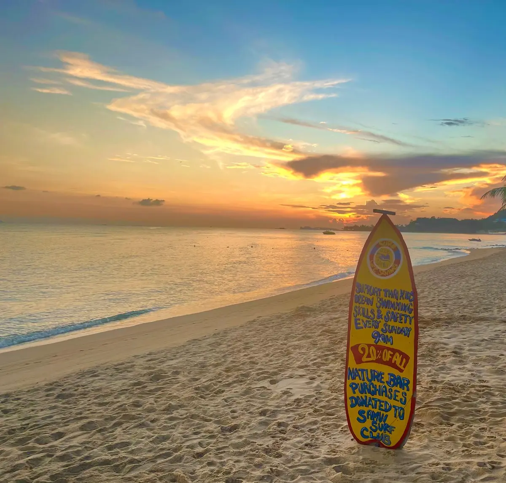

Location
Nature Bar, Mae Nam Beach, Koh Samui.
Venue
Nature Bar, Mae Nam Beach, Koh Samui.

Nature Bar
Nature Bar is the club's beachside meeting point for weekly sessions, family gatherings and community events.
Set directly on Mae Nam Beach, it gives the club an easy place to meet before children move into supervised beach and ocean-safety activities.

Nature Bar, Mae Nam Beach, Koh Samui.
A simple beachfront setting for meeting, training and moving safely into water activities.
A welcoming place for families, volunteers and supporters to gather around club sessions.